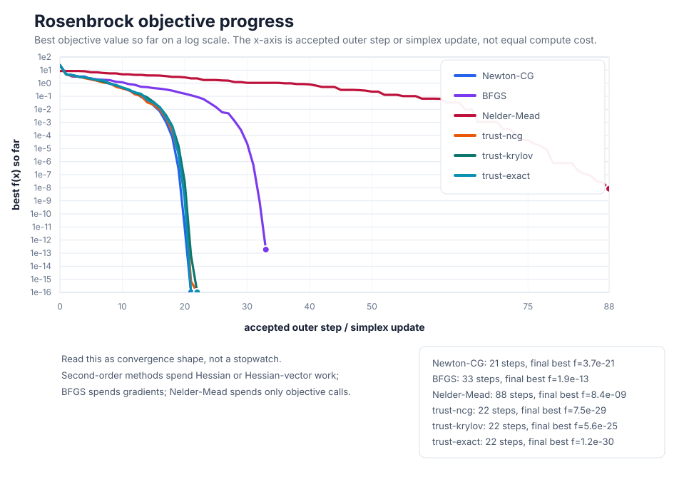

From trust-ncg To trust-krylov
trust-ncg already gave us the trust-region idea: build a quadratic model near \(x_k\), restrict the step to a radius \(\Delta_k\), and accept the step only when the model predicts the real objective well. The model is
Here \(p\) is the proposed movement away from \(x_k\), \(g_k\) is the gradient, and \(H_k\) is the Hessian or Hessian-vector product operator. trust-ncg uses truncated conjugate gradients to find a good enough step inside the ball. It can stop early when the residual is small, when the boundary is reached, or when non-positive curvature appears.
The natural shortcut is to solve the whole trust-region subproblem almost exactly. That would give the most careful model step, but it usually requires dense Hessian linear algebra. trust-krylov takes the middle path: do not solve the full \(n\)-dimensional problem, but do solve a richer small problem built from Hessian-vector products.
What A Krylov Subspace Means
Start with the gradient direction \(g_k\). Apply the Hessian once and you learn how curvature bends that direction: \(H_kg_k\). Apply it again and you learn the next layer of curvature: \(H_k^2g_k\). The Krylov subspace is the span of the directions you can build from that repeated product pattern:
This does not mean SciPy literally forms powers of \(H_k\). That would be unstable and wasteful. The practical routine builds an orthonormal basis for the same growing information space using Hessian-vector products. Call that basis matrix \(Z_m\). Its columns are the \(m\) directions the inner solver is willing to combine.
Why not just keep taking more truncated-CG steps? Sometimes that is enough. But when the model is indefinite or the boundary is important, a richer subspace lets the algorithm compare more combinations of useful directions instead of accepting the first boundary exit.
The Smaller Problem Inside
Once \(Z_m\) is available, trust-krylov does not choose the large step \(p\) directly. It chooses a smaller coordinate vector \(y\). The full step is reconstructed as
This is the key distinction: \(p_m\) lives in the original parameter space, while \(y\) only says how much of each Krylov basis direction to mix. If \(m\) is small, solving for \(y\) is much cheaper than solving for every coordinate of \(p\).
Projecting the model means rewriting the large quadratic in those small coordinates. The projected gradient is \(g_m=Z_m^\mathsf{T}g_k\). The projected Hessian is \(T_m=Z_m^\mathsf{T}H_kZ_m\). Then the subproblem becomes
The scalar-looking radius did not disappear. Because the columns of \(Z_m\) are orthonormal, \(\|Z_my\|=\|y\|\), so the same trust radius can constrain the smaller projected problem.

Why It Helps With Indefinite Curvature
A positive-definite Hessian makes the quadratic model a bowl. An indefinite Hessian means at least one direction bends downward. Without a trust radius, that model can keep decreasing along the negative-curvature direction and never have a finite minimizer.
The tempting shortcut is to "fix" the Hessian by ignoring negative curvature. That can throw away useful information. If the objective is currently sitting on a saddle-like model, negative curvature may be exactly the escape route.
trust-krylov keeps the negative-curvature information, but the radius keeps it controlled. Inside the small projected problem, the method can balance two forces: the gradient wants to reduce first-order slope, and negative curvature may make a boundary step attractive.

Meaning: trust-krylov is not more robust because it ignores difficult curvature. It is more robust because it gives the trust-region subproblem a better low-dimensional view of that curvature.
Watch It On Rosenbrock
On Rosenbrock, trust-krylov can use the same Hessian-vector product interface as Newton-CG and trust-ncg. Each product \(H_kv\) helps build the Krylov subspace; the accepted step still passes through the usual trust-region agreement check before the outer iterate moves.


Use trust-krylov In SciPy
In SciPy, use method="trust-krylov". Provide
jac and either hess or hessp.
The Hessian-vector product version is often the point of the method:
it lets the inner Krylov solve learn curvature without storing the
full Hessian.
import numpy as np
from scipy.optimize import minimize
def rosen(x):
return np.sum(100.0 * (x[1:] - x[:-1]**2.0)**2.0 + (1 - x[:-1])**2.0)
def rosen_der(x):
der = np.zeros_like(x)
der[1:-1] = (
200 * (x[1:-1] - x[:-2]**2)
- 400 * x[1:-1] * (x[2:] - x[1:-1]**2)
- 2 * (1 - x[1:-1])
)
der[0] = -400 * x[0] * (x[1] - x[0]**2) - 2 * (1 - x[0])
der[-1] = 200 * (x[-1] - x[-2]**2)
return der
def rosen_hess_p(x, p):
hp = np.zeros_like(x)
hp[0] = (1200 * x[0]**2 - 400 * x[1] + 2) * p[0] - 400 * x[0] * p[1]
hp[1:-1] = (
-400 * x[:-2] * p[:-2]
+ (202 + 1200 * x[1:-1]**2 - 400 * x[2:]) * p[1:-1]
- 400 * x[1:-1] * p[2:]
)
hp[-1] = -400 * x[-2] * p[-2] + 200 * p[-1]
return hp
x0 = np.array([1.3, 0.7, 0.8, 1.9, 1.2])
result = minimize(
rosen,
x0,
method="trust-krylov",
jac=rosen_der,
hessp=rosen_hess_p,
options={"gtol": 1e-8, "disp": True},
)
print(result.x)
print(result.fun)
print(result.success, result.message)Compared with trust-ncg, expect the same information contract but a different cost balance. trust-krylov may spend more Hessian-vector products inside one outer iteration, hoping to need fewer or more reliable outer steps.
When To Use It
| Use trust-krylov when | Prefer another method when |
|---|---|
| You have gradients and Hessian-vector products for a large smooth problem. | You only have function values; derivative-free methods fit that information level better. |
| The Hessian may be indefinite, and negative curvature is useful rather than just a nuisance. | Each Hessian-vector product is very expensive; trust-ncg may be cheaper per outer iteration. |
| A more accurate trust-region subproblem solve is worth extra inner products. | The truncated-CG steps from trust-ncg are already reliable enough for your problem. |
| You want a matrix-free method before paying for dense Hessian factorizations. | The problem is medium-sized with a cheap dense Hessian; trust-exact may be more direct. |